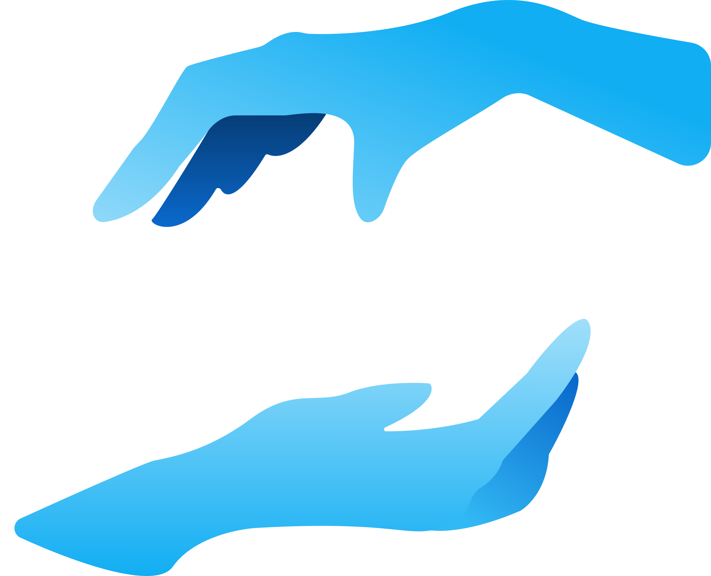
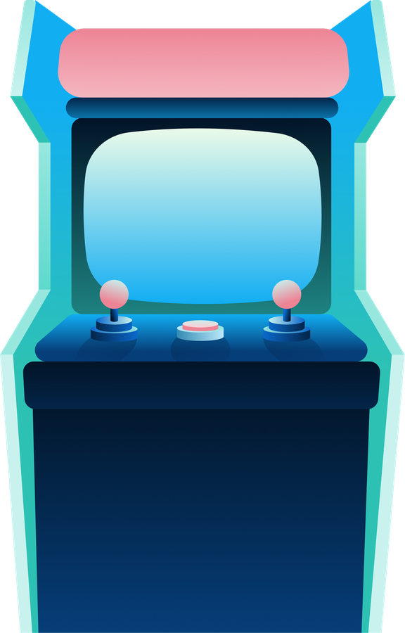

SEAVENTURE
N5CC (Ngã 5 Chuồng Chó) is a team of five - Hồ Kiều Phương, Tiêu Dĩnh Ngọc, Trần Tùng Phương, Phạm Hoài An, and Trịnh Tuấn Hưng. Together, we created Seaventure, a website and interactive games exploring different goals of SDG 14: Life Below Water.
SDG 14:
Life Below Water
This project focuses on Sustainable Development Goal 14: Life Below Water, aiming to raise awareness among Generation Z about protecting marine environments. This project aims to highlights how everyday actions can impact oceans and marine ecosystems, encouraging young people to make more sustainable choices.
“The greatest threat to our planet is the belief that someone else will save it”

Change everyday habits to protect ocean health

Explore games inspired by SDG 14: Life Below Water
Each game focuses on a different goal for protecting our ocean, and make sure you check CREDIT of each game to learn more about them.
Press START to random game
START